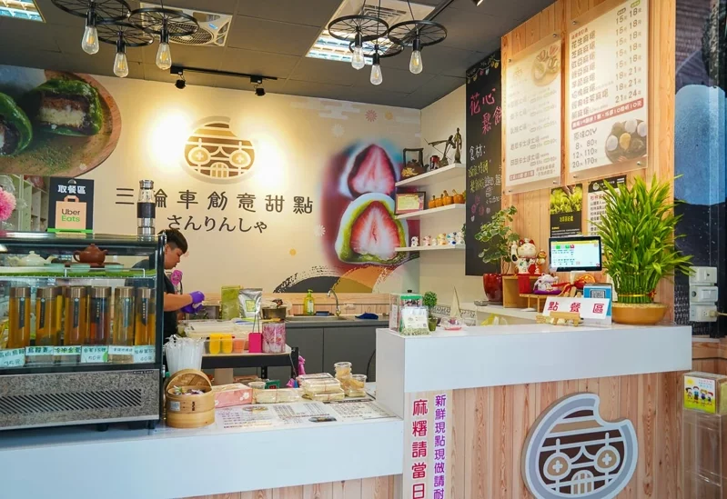

首頁
柴拉麵
阿娘給的蒜味肉羹
心得

三輪車手工麻糬
冬季最正點的高雄草莓大福，絕對首推高雄左營的三輪車麻糬大福冰品啦！
總是在台灣草莓季一開始就大器購入，大湖草莓，並特選飯店級的1號草莓～
酸甜大size草莓包入手工製新鮮麻糬，入口彈牙，加上真材實料的餡料可自選紅豆、綠豆或芋泥，大顆飽滿，
每次冬天推出超熱賣，吸引草莓控與麻糬控前往～而我們家也是一吃就被圈粉啦！！！
（三輪車草莓大福手工製作，數量有限！數量少需提前1~2小時預定，超過10個請盡量提前一日預定，避免等候喔～）
草莓大福
幾分鐘後，我們這次的目標：草莓大福，就包好了啊啊啊！！
拿到時很驚訝，這草莓大福也太誇張大顆～～
大概是我3/4拳頭大小了！！！而且一顆超重～
放到盤上，真的是巨碩的草莓大福啊哈哈，草莓香氣一直飄上來。
草莓芋泥球
這個是隱藏版口味，訂購時私訊截圖問這個有沒有～
這個完全是為芋泥控設計的口味啊，超厚一層芋泥包覆大顆草莓，
一口吃，香甜草莓配上細緻芋泥在口慢慢化開真的超～美～好！
抹茶皮草莓大福（芋泥）
抹茶皮草莓大福是我跟我妹一眼看到就決定要點！
而且我們是芋頭仙女姊妹花，直接兩顆都點芋泥的。
這裡的草莓大福做成草莓外露與不外露的，價格都一樣，就看你想吃哪種，我們這天選一種一顆～